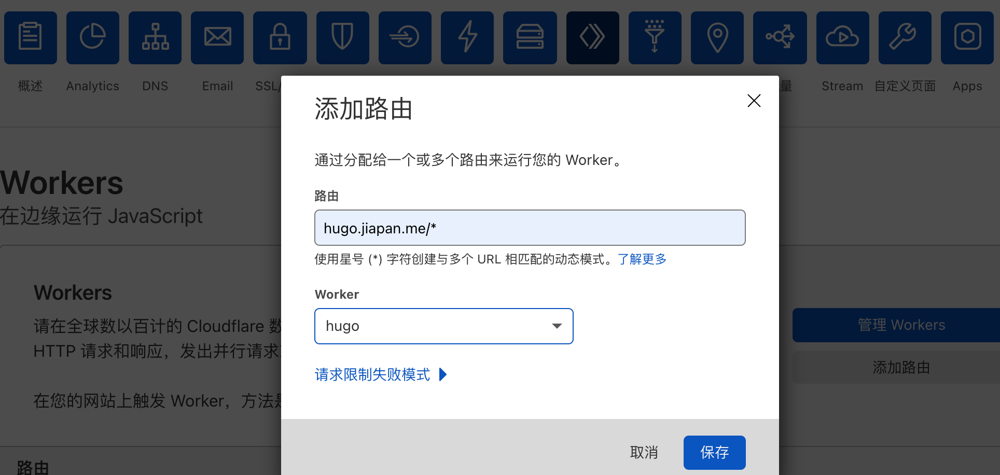

当前部署方案的弊端
我们在选择静态站点（如博客、技术文档等）部署方案时会考虑以下几种情况：
- 访问速度
- 绑定自定义域名
- 便于部署
- 费用
- 自动配置 https
我目前使用的就是静态博客，托管在了 3 个地方，而且各有一些弊端：
- Github Pages：国内的访问速度一般
- 七牛云：会收取少量费用、无法绑定未在国内备案的域名、需要手动配置 https 证书
- VPS + Cloudflare CDN：需提前购买 VPS、配置 Nginx，上手难度略大
今天我们就利用 Cloudfalre Works 来部署一个满足上边所有条件的博客。
Cloudflare CDN
在使用 VPS + Cloudflare CDN 方案时，我们将博客的静态文件放在 VPS 上，并通过 Nginx 搭起一个静态站点，然后前置一个 Cloudflare CDN 来做静态资源加速和 https 的处理，即我们的 VPS 来作为静态文件的源站。
Cloudflare Workers
使用 Cloudflare Workers 方案可以无需准备 VPS。
Cloudflare Workers 本质上是一个边缘计算服务，举几个例子：
- 将不同类型的请求按路线发送到不同的源服务器。
- 在边缘网络展开HTML模板，以降低原始带宽成本。
- 将访问控制应用于缓存的内容。
- 将一小部分用户重定向到开发用服务器。
- 在两个完全不同的后端之间执行A / B测试。
- 构建完全依赖Web API的“无服务器”应用程序。
- ……
了解更多可以参考：https://blog.cloudflare.com/zh-cn/cloudflare-workers-unleashed-zh-cn/
生成静态站点
目前，生成静态站点的方案有很多，比如 Hugo、Hexo和 Jekyll 等，下边我以 Hugo 为例来生成一个站点，其他方案可以参考对应的官方文档。
安装 hugo 命令
1 | brew install hugo |
生成新站点
1 | hugo new site quickstart |
执行这个命令后，会在执行的目录下创建出一个名为 quickstart 的目录，里边就是我们新站点的内容。
修改站点主题
下载主题：
1 | cd quickstart |
配置主题：
1 | echo theme = \"ananke\" >> config.toml |
创建一篇文章
1 | hugo new posts/my-first-post.md |
修改 content/posts 下的文章源文件，将 draft 改为 false，就可以正常发布了，正文随便点什么。
1 | --- |
浏览效果
1 | hugo server -D |
此时我们可以访问：http://localhost:1313/ 看下效果。
生成静态文件
使用 hugo -D 命令生成静态文件用来发布到 Cloudflare Workers 上，hugo 生成的静态文件在项目目录的 public 下。
发布到 Cloudflare Workers
发布前需要先注册自己的 Cloudflare 账号，开通 Workers 服务，在 Workers 页面右侧可以修改自己的子域名，比如我的子域名为 panmax.workers.dev，即我发布的服务都是以 panmax.workers.dev 结尾，比如：https://hugo.panmax.workers.dev/
安装 wrangler 命令
wrangler 是 Cloudflare workers 为开发人员提供的 CLI 工具。使用 npm 进行安装：
1 | npm i @cloudflare/wrangler -g |
如果提示 node 版本太低，可以通过 nvm 来切换版本：
1 | brew install nvmnvm install 12 |
初始化 cloudflare workers 项目
在刚才生成的 quickstart 目录下执行以下命令来初始化 cloudflare workers 项目，这个命令会在当前目录下生成 wrangler.toml 文件和 workers-site 目录。
1 | wrangler init --site hugo |
编辑 wrangler.toml
将 wrangler.toml 中的 bucket 改为我们静态目录的路径：
1 | 根据你的项目，将 bucket 改成生成静态文件的目录 |
其他参数暂时无需修改。
用户登录
使用 wrangler login 来完成登录，在弹出的页面中点击 Allow 即可。当命令行打印出 「✨ Successfully configured. 」就说明我们登录成功了，会在 home 下生成 .wrangler 目录，里边记录了我们的用户信息。
这个操作只需进行一次，后续发布时就不用再执行了。
发布
最后，使用 wrangler publish 即可将我们的静态站点发布到 cloudflare workers 上了。同时还会将我们站点的地址打印出来：
用浏览器访问这个地址就能看到效果了：
配置自定义域名
如果你在 cloudflare 上托管了自己的域名，还可以将自己的域名映射到 workers 上。
配置 CNAME
在你的 DNS 配置中新增一条 CNAME 规则，名称是你想关联的子域名，目标为 workers 为你提供给的域名。
比如，我要将 hugo.jiapan.me 关联到刚才发布的站点上，此时我的名称填写 hugo，目标填写 hugo.panmax.workers.dev。
关联 workers
在域名管理页面上边的菜单中点击 workers，点击「添加路由」，还是以我刚才配置的域名为例，路由填写 hugo.jiapan.me/* ，Workers 选择 hugo，点击保存。

之后我们就可以使用自定义域名来访问我们的站点了：